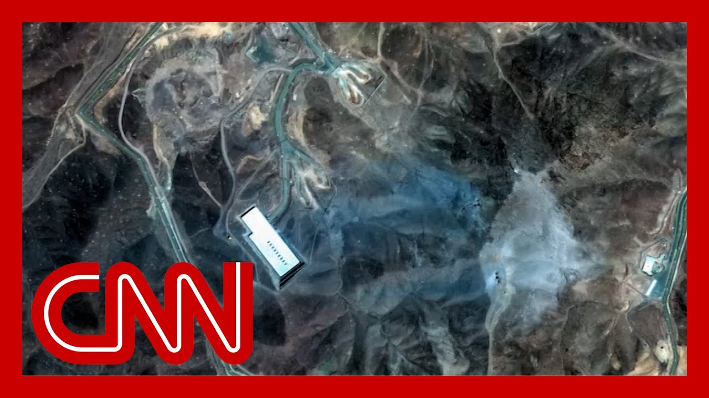

【2025-06-25 CNN独家：消息人士称，美国对伊朗的打击未摧毁核设施】
Summary: Sources reveal that early U.S. intelligence assessments indicate recent strikes on Iranian nuclear facilities failed to destroy core components, setting the program back only months, contradicting White House claims of total obliteration.
摘要： 消息人士透露，美国早期情报评估显示，近期对伊朗核设施的打击未能摧毁核心部件，仅使该计划倒退数月，这与白宫关于彻底摧毁的说法相矛盾。

⏱️ Estimated Reading Time: 16 min
📚 六级生词 📚 雅思生词 📚 托福生词 📚 专八生词 📚 SAT生词 📚 考研生词 📚 GRE生词 📚 高考生词
Sources tell CNN that according to an early U.S. intelligence assessment, the U.S military strikes on three of Iran's nuclear facilities last weekend did not destroy the core components of the country's nuclear program and likely only set it back a few months.
消息人士告诉CNN，根据美国早期情报评估，美军上周末对伊朗三处核设施的打击并未摧毁该国核计划的核心部件，可能仅使其倒退数月。
That's right.
没错。
So this is an assessment that actually is out from the Defense Intelligence Agency.
这是国防情报局的评估。
That is the Pentagon's intelligence arm and it was based on a battle damage assessment conducted by U.S. Central Command after the strikes.
这是五角大楼的情报部门，其依据是美国中央司令部在打击后进行的战斗损害评估。
According to one of the sources.
据其中一位消息人士称。
Let's go to CNN national security correspondent Natasha Bertrand, who has this exclusive new report.
让我们连线CNN国家安全记者娜塔莎·伯特兰，她带来了这份独家新报道。
This is, to that question that has been asked about how much damage has been done.
这就是关于造成多大损害的问题。
This is a real question.
这是一个实际问题。
It's also a political question that has been, to something that Donald Trump has been sort of, dealing with here recently.
这也是一个政治问题，与唐纳德·特朗普最近处理的事情有关。
What are you learning?
你了解到什么？
And Natasha?
娜塔莎？
Yeah.
是的。
Look, Brianna, this is the first assessment that we are getting that the U.S intelligence community has found about the battle damage that resulted from those U.S. military strikes on these three Iranian nuclear facilities over the weekend.
布里安娜，这是我们得到的美国情报界关于上周末美军对伊朗三处核设施打击造成的战斗损害的第一份评估。
And as you said, it was produced by the Defense Intelligence Agency, which is the Pentagon's intelligence arm.
如你所说，这是由五角大楼情报部门国防情报局制作的。
And it is worth noting that it is a very early assessment.
值得注意的是，这是一份非常早期的评估。
The strikes were only a matter of days ago, and the intelligence community is still gathering intelligence.
打击只是几天前的事，情报界仍在收集情报。
They are still working to come up with a full, comprehensive picture of what exactly happened here.
他们仍在努力全面了解这里到底发生了什么。
But based on a battle damage assessment that was carried out by U.S. Central Command, essentially looking at the images and looking at what was actually damaged, the Defense Intelligence Agency has assessed that the core components of Iran's nuclear program are largely intact, and that Iran's nuclear program has essentially only been set back by months.
但根据美国中央司令部进行的战斗损害评估，主要是查看图像和实际受损情况，国防情报局评估认为，伊朗核计划的核心部件基本完好，伊朗的核计划基本上只倒退了几个月。
Now, we presented this information to the White House for comment, and White House Press Secretary Karine Jean-Pierre, she did acknowledge the existence of this assessment.
我们向白宫提交了这份信息以征求意见，白宫新闻秘书卡琳·让-皮埃尔确实承认了这份评估的存在。
But she said in a statement that the administration disagrees with that.
但她在声明中表示，政府不同意这一评估。
She said, quote, this alleged assessment is flat out wrong and was classified as top secret but was still leaked to CNN by an anonymous low level loser in the intelligence community.
她说：“这份所谓的评估完全错误，被列为绝密，但仍被情报界一个匿名的低层失败者泄露给CNN。”
The leaking of this alleged assessment is a clear attempt to demean President Trump and discredit the brave fighters who conducted a perfectly executed mission to obliterate Iran's nuclear program.
泄露这份所谓的评估明显是为了贬低特朗普总统，并诋毁执行完美任务以摧毁伊朗核计划的勇敢战士。
Everyone knows what happens when 14 30,000 pound bombs land perfectly on their targets.
大家都知道当14枚3万磅的炸弹完美命中目标时会发生什么。
Total obliteration.
彻底摧毁。
Now, it is worth noting here that there has been dissent, I should say, within the intelligence community, within the defense community about how much of an impact these massive bunker buster bombs would actually have on Iran's nuclear facilities.
值得注意的是，情报界和国防界内部对这些巨型掩体炸弹对伊朗核设施的实际影响有多大存在分歧。
It was far from certain, given that these bombs had never been tested in an actual combat scenario, whether they would actually penetrate those very, very deep underground bunkers that lie underneath these nuclear facilities.
由于这些炸弹从未在实际战斗场景中测试过，它们是否能穿透这些核设施下非常深的地下掩体还远未确定。
And what we are told is that as of now, this Defense Intelligence Agency assessment, it does conclude at this point.
我们被告知，截至目前，国防情报局的这份评估确实得出了结论。
Again, it is still very early that those underground facilities including the centrifuges, including the highly enriched uranium that everyone has been talking so much about, those are largely intact.
再次强调，现在还为时过早，那些地下设施，包括离心机和人们热议的高浓缩铀，基本完好。
Now, of course, this does stand at odds with what President Donald Trump and Secretary of Defense Pete Hegseth have been saying in recent days about the impact of these U.S. military strikes.
当然，这与唐纳德·特朗普总统和国防部长皮特·赫格塞斯最近关于美军打击影响的说法相矛盾。
Of course, President Trump said it was totally obliterated, and Secretary Hegseth did as well.
当然，特朗普总统说它被彻底摧毁了，赫格塞斯部长也这么说。
And he actually also provided CNN with a statement.
他还向CNN提供了一份声明。
And he said that, quote, based on everything we have seen and I've seen it all, our bombing campaign obliterated Iran's ability to create nuclear weapons.
他说：“根据我们所看到的一切，而且我已经看到了一切，我们的轰炸行动摧毁了伊朗制造核武器的能力。”
Our massive bombs hit exactly the right spot at each and worked perfectly.
我们的巨型炸弹每次都准确命中目标，效果完美。
The impact of those bombs is buried under a mountain of rubble in Iran.
这些炸弹的影响被埋在伊朗的废墟下。
So anyone who says the bombs were not devastating, is just trying to undermine the president and the successful mission.
所以任何说炸弹没有毁灭性的人，都只是想破坏总统和这次成功任务。
Now, our sources did emphasize here that there was severe damage that was done largely to the above ground structures at these nuclear sites.
我们的消息人士强调，这些核设施的地面结构受到了严重破坏。
and so there was damage done, of course, by these massive bombs.
当然，这些巨型炸弹造成了破坏。
But the core components of the nuclear program, we are told they are largely intact, and it only set the program back by a matter of months or so.
但我们被告知，核计划的核心部件基本完好，仅使该计划倒退几个月左右。
Brianna, Natasha Bertrand, please stand by.
布里安娜，娜塔莎·伯特兰，请稍等。
Let's go. Now live to CNN anchor and chief White House correspondent Kaitlan Collins, who was traveling with President Trump as he attends a NATO summit from the Netherlands.
让我们连线CNN主播兼白宫首席记者凯特兰·柯林斯，她正随特朗普总统在荷兰参加北约峰会。
Caitlin, you heard the statement there from the White House.
凯特兰，你听到了白宫的声明。
They acknowledged but said that they disagreed with it and then attacked the sourcing by CNN.
他们承认但表示不同意，并攻击了CNN的消息来源。
What are you hearing?
你听到了什么？
And I think it's notable that when we reached out to the White House for comment on what Natasha and Katie Boehner had been hearing here from these sources about this initial assessment, that they provided statements not only from Karine Jean-Pierre, the White House press secretary, obviously, who is designed to respond to media reports, but also from the defense secretary Pete Hegseth himself.
值得注意的是，当我们联系白宫就娜塔莎和凯蒂·伯纳从消息人士那里听到的关于这份初步评估的内容征求意见时，他们不仅提供了白宫新闻秘书卡琳·让-皮埃尔的声明（她显然是为了回应媒体报道），还提供了国防部长皮特·赫格塞斯本人的声明。
Give it.
说吧。
He is on the record talking about what he believes the results of these strikes were.
他公开谈论了他认为这些打击的结果是什么。
Now, the issue here at hand is obviously this is an initial assessment.
目前的问题是，这显然是一份初步评估。
We're still waiting for a comprehensive assessment to be done.
我们仍在等待一份全面的评估。
And as Natasha mentioned, there certainly more information could come to light.
正如娜塔莎提到的，肯定会有更多信息浮出水面。
And that is how this works as they are in the early days of assessing this.
这就是他们在评估初期的运作方式。
But if this is the assessment that stands as it is right now and what the DIA found according to this report, that undermines what President Trump has been saying publicly about the result and the impact of these strikes and what they had on Iran's nuclear program just this week.
但如果这就是目前的评估，以及国防情报局根据这份报告得出的结论，那就削弱了特朗普总统本周公开表示的关于这些打击的结果和影响以及它们对伊朗核计划的影响的说法。
He has been quite defensive about this, saying it's not enough, in his view, to just say that they were sufficiently damaged.
他对此相当防备，认为仅仅说它们受到了足够的损害是不够的。
He is saying they were completely destroyed and obliterated.
他说它们被完全摧毁和消灭了。
And he's been defending the B-2 and the pilots flying those B-2s that took these bombs over to Iran on Saturday night and dropped them on top of these nuclear sites, at great lengths, as he did as he was leaving the White House today.
他一直在为B-2轰炸机和驾驶这些B-2的飞行员辩护，这些飞机上周六晚上将这些炸弹运到伊朗并投放在这些核设施上，就像他今天离开白宫时那样。
So certainly would undermine what the president himself has been saying.
这肯定会削弱总统本人的说法。
But I do think, as Natasha mentioned there, this is an early and preliminary assessment as they're still waiting to see what the other findings show.
但我确实认为，正如娜塔莎提到的，这是一份早期和初步的评估，因为他们仍在等待其他调查结果。
but this was the big question going into this.
但这是进入此事的大问题。
And I had actually asked President Trump this when we were on Air Force One last week, coming back from because the bombs that were used here for us, and Brianna had never been used in combat before.
上周我们在空军一号上返回时，我曾问过特朗普总统这个问题，因为这里使用的炸弹，布里安娜，以前从未在战斗中使用过。
Yes, they had been heavily tested, but they never actually been dropped on any site before.
是的，它们经过了大量测试，但以前从未实际投放在任何地点。
And the question I have for the president was, did he have assurances or any guarantees that conducting these U.S. strikes would actually take out Iran's nuclear program?
我问总统的问题是，他是否有任何保证或保证，进行这些美国打击实际上会摧毁伊朗的核计划？
He told me there were no guarantees in life.
他告诉我，生活中没有保证。
But obviously that's a key question that we were told he was also asking his officials behind the scenes is, how would this play out?
但显然，这是一个关键问题，我们被告知他也在幕后询问他的官员，这会如何发展？
What would this look like?
这会是什么样子？
Because as we know, the president even with military action in his first term, does go through these assessments in a pretty thorough manner to want to know what the other end of this is going to look like.
因为我们知道，总统即使在他的第一个任期内采取军事行动，也会相当彻底地进行这些评估，想知道另一端的结局会是什么样子。
yeah.
是的。
And certainly this is something Caitlin just put into context, because President Trump is there in the Netherlands, as you are there, following this very important NATO summit.
当然，这是凯特兰刚刚放在背景中的事情，因为特朗普总统正在荷兰，就像你在那里一样，参加这次非常重要的北约峰会。
And he has been, you know, projecting this great victory.
他一直在宣扬这场伟大的胜利。
He's also there at this summit that is so much tailored to him.
他也在这次为他量身定制的峰会上。
He's kind of he's riding a little bit of a high as he's there.
他在那里有点得意。
So, any sort of perceived slight to what he considers a great success.
所以，任何对他认为的巨大成功的轻微轻视。
And so far, the holding of this, at least brief cease fire so far.
到目前为止，至少短暂的停火。
How is he going to perceive that?
他会如何看待这一点？
Yeah, the president has been to NATO summits before where things did not go well.
是的，总统以前参加过北约峰会，但事情并不顺利。
I mean, everyone remembers the Brussels summit of his first term, where he walked out of the room at one point so often when he comes to these and there is a new NATO secretary general this time, who was sending the president messages earlier today that Trump was then posting screenshots of on social media, saying that they were essentially waiting for his arrival here as he just arrived a few hours ago.
我的意思是，每个人都记得他第一个任期的布鲁塞尔峰会，当时他经常走出房间，这次有一位新的北约秘书长，他今天早些时候向总统发送了消息，特朗普随后在社交媒体上发布了截图，说他们基本上是在等待他的到来，因为他几小时前刚刚到达。
a lot of this is going to focus on defense spending.
很多内容将集中在国防开支上。
A lot of it's going to focus on Russia as well.
很多内容也将集中在俄罗斯上。
The Ukrainian president, Volodymyr Zelensky, is going to be here for his meeting with the president, is only their second meeting since that fiery Oval Office meeting that happened a few months ago.
乌克兰总统弗拉基米尔·泽连斯基将在这里与总统会面，这只是他们自几个月前那次激烈的椭圆形办公室会议以来的第二次会面。
And so that is something everyone is going to be watching closely.
所以这是每个人都会密切关注的事情。
but the fact that the key takeaway here, as you know, going into these summits, they largely decide what they're going to talk about beforehand, though obviously, when President Trump is in the room, as his own aides will very, very well and readily concede, things can change and you'll always know what the outcome is going to be.
但关键要点是，正如你所知，进入这些峰会，他们大多事先决定要讨论什么，尽管显然，当特朗普总统在场时，正如他的助手们非常非常清楚并乐意承认的那样，事情可能会改变，你总会知道结果会是什么。
But the fact that it is tailored to be on defense spending, which is his chief complaint with NATO countries that they do not spend enough on defense, does show the impact that he has on the conversations that are held at summits like this.
但事实是，它被定制为关于国防开支，这是他对北约国家的主要抱怨，即他们在国防上的支出不够，确实显示了他对像这样的峰会上举行的对话的影响。
But he was wanting to come into this with this ceasefire brokered between Israel and Iran.
但他希望带着以色列和伊朗之间斡旋的停火协议进入这次峰会。
That was in part, due to his anger that we saw this coming out of the White House.
这部分是由于他的愤怒，我们看到这一点从白宫传出。
And so that is something we'll see how he talks about when he's here, meeting with these other world leaders, as he's doing right now.
所以这是我们将看到他在与这些其他世界领导人会面时如何谈论的事情，就像他现在正在做的那样。